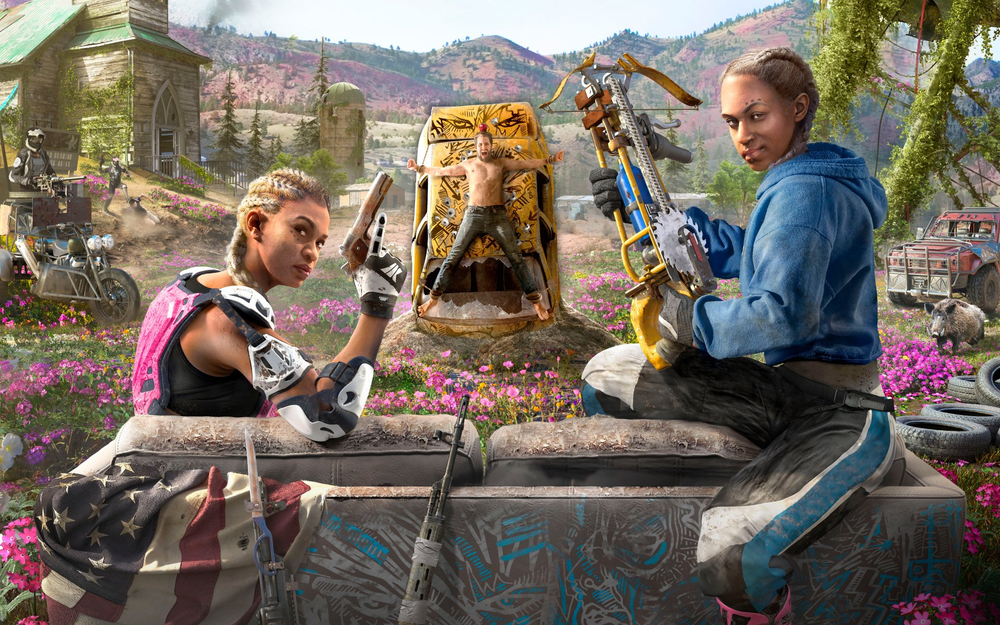
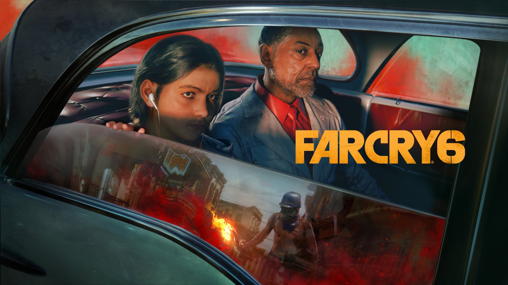
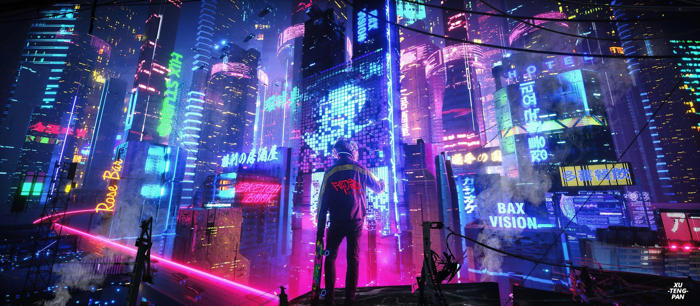

Dota 2

Every day, millions of players worldwide enter the battle as one of over a hundred Dota Heroes in a 5v5 team clash. Dota is the deepest multi-player action RTS game ever made and there's always a new strategy or tactic to discover. It's completely free to play and always will be – start defending your ancient now.
From magical tacticians to fierce brutes and cunning rogues, Dota 2's hero pool is massive and limitlessly diverse. Unleash incredible abilities and devastating ultimates on your way to victory.
Source
Genshin Impact

Genshin impact is an open-world action role-playing game that allows the player to control one of four interchangeable characters in a party. Switching between characters can be done quickly during combat, allowing the player to use several different combinations of skills and attacks. Characters may have their strengths enhanced in various ways, sch as increasing a character's level and improving artifacts and the weapons that the character equips
Source
Valorant

Valorant is a free-to-play first-person hero shooter developed and published by Riot Games, for Microsoft Windows. First teased under the codename Project A in October 2019, the game began a closed beta period with limited access on April 7, 2020, followed by an official release on June 2, 2020
Valorant is a team-based first-person hero shooter set in the near future. Players play as one of a set of Agents, characters designed based on several countries and cultures around the world. In the main game mode, players are assigned to either the attacking or defending team with each team having five players on it. Agents have unique abilities, each requiring charges, as well as a unique ultimate ability that requires charging through kills, deaths, orbs, or objectives. Every player starts each round with a "classic" pistol and one or more "signature ability" charges. Other weapons and ability charges can be purchased using an in-game economic system that awards money based on the outcome of the previous round, any kills the player is responsible for, and any objectives completed.
The game has an assortment of weapons including secondary guns like sidearms and primary guns like submachine guns, shotguns, machine guns, assault rifles and sniper rifles. There are automatic and semi-automatic weapons that each have a unique shooting pattern that has to be controlled by the player to be able to shoot accurately. Different agents allow players to find more ways to plant the Spike and style on enemies with scrappers, strategists, and hunters of every description. It currently offers 18 agents to choose from. They are Brimstone, Viper, Omen, Cypher, Sova, Sage, Phoenix, Jett, Raze, Breach, Reyna, Killjoy, Skye, Yoru, Astra, KAY/O, Chamber, and Neon.
Source
Far Cry
Far Cry, the first game in the series, was developed as an open-ended first-person shooter by German studio Crytek, being the first title to use their CryEngine software. The game is set on a mysterious archipelago in Micronesia, where ex-special forces operative Jack Carver must use various weapons, tools, and his surroundings to survive against hostile mercenaries that control the islands while searching for the journalist who was accompanying him and who went missing. As Jack explores the islands, he uncovers the horrific genetic experiments being conducted on the local wildlife and must confront the mad scientist behind them.
The game was published by Ubisoft on March 23, 2004 for Microsoft Windows. It received generally positive reviews, with praise for its visuals, gameplay mechanics, and the level of freedom given to the player, and sold 730,000 units within four months of release.
Source
Far Cry New Dawn

Dive into a transformed vibrant post-apocalyptic Hope County, Montana, 17 years after a global nuclear catastrophe. Lead the fight against the Highwaymen, as they seek to take over the last remaining resources.
Welcome to Hope County, Montana, land of the free and the brave but also home to a fanatical doomsday cult known as the Project at Eden's Gate. Stand up to cult leader Joseph Seed, and his siblings, the Heralds, to spark the fires of resistance and liberate the besieged community.
Source
Far Cry 6

Similar to the previous entries in the series, Far Cry 6 is an action-adventure first-person shooter game set in an open world environment which the player can navigate on foot or via using various land, water, and air vehicles. The world is divided into seven main regions with an array of terrain, ranging from urban areas and dense jungles, to mountain ranges and open oceans. Gameplay focuses on armed and close-quarters combat. Players are able to use a wide array of conventional weapons (such as sidearms, assault rifles, submachine guns, shotguns, light-machine guns, sniper rifles and grenade launchers). Firearms can be customized using materials found throughout the world.
Source
Cyber Punk 2077

Cyberpunk 2077 is an action role-playing game played in a first-person perspective as V, a mercenary whose voice, face, hairstyles, body type and modifications, background, and clothing are customisable. Stat categories—Body, Intelligence, Reflexes, Technical, and Cool—are influenced by the character classes that players assume, which are NetRunner (hacking), Techie (machinery), and Solo (combat). V must consult a "ripperdoc" to upgrade and purchase cyberware implants; black markets offer military-grade abilities. The rarity of any given equipment is shown by a coloured tier system. V can take cover, aim, run, jump, double jump, and slide. Melee strikes can be dealt with close-combat weapons. There are three types of ranged weapons, all of which can be customised and modified—Power (standard), Tech (which penetrate walls and enemies), and Smart (with homing bullets). Ranged weapons are equipped to ricochet bullets in a target's direction and slow them down in bullet time. Four types of damage can be inflicted and resisted—Physical, Thermal, EMP, and Chemical. Weapon use increases accuracy and reloading speed, which are manifested in character animations. Gunsmiths repair and upgrade weapons. The game can be completed without killing anyone, with non-lethal options for weapons and cyberware.